FreeTTS Programmer's Guide |
|
Related Documentation |
What this is - This is an overview of how FreeTTS works from a programmer's point of view. It describes the major classes and objects used in FreeTTS, provides a data-flow walkthrough of FreeTTS as it synthesizes speech, and provides an annotated definition of a voice that serves as an example of how to define a new custom voice. What this is not - This is not an API guide to FreeTTS, nor is it a tutorial on the fundamentals of speech synthesis. The FreeTTS package is based upon Flite, a light-weight synthesis package developed at CMU. FreeTTS retains the core architecture of Flite. Anyone who is familiar with the workings of Flite will probably feel comfortable working with FreeTTS. Since Flite itself is based upon the Festival speech synthesis system, those who are experienced with the Festival package will notice some similarities between Festival and FreeTTS. |
FreeTTS Organization |
FreeTTS is organized as a number of trees as follows:
com.sun.speech.engine contains support for JSAPI 1.0. Various packages can be found in this tree.
com.sun.speech.freetts contains the implementation of the FreeTTS synthesis engine. The bulk of the code can be found in this tree. com.sun.speech.freetts.jsapi package provides the JSAPI glue code for FreeTTS.
The com.sun.speech.freetts package is broken down further into sets of sub-packages as follows:
com.sun.speech.freetts contains high-level interfaces and classes for FreeTTS. Much non-language and voice dependent code can be found here.
com.sun.speech.freetts.diphone provides support for diphone encoded speech.
com.sun.speech.freetts.clunits provides support for cluster-unit encoded speech.
com.sun.speech.freetts.lexicon provides definition and implementation of the Lexicon and Letter-to-Sound Rules.
com.sun.speech.freetts.util provides a set of tools and utilities.
com.sun.speech.freetts.audio provides audio output support.
com.sun.speech.freetts.cart provides interface and implementations of several Classification and Regression Trees (CART).
com.sun.speech.freetts.relp provides support for Residual Excited Linear Predictive (RELP) decoding of audio samples.
com.sun.speech.freetts.en contains English specific code.
com.sun.speech.freetts.en.us contains US-English specific code.
Major FreeTTS Objects |
There are a number of objects that work together to perform speech synthesis.
FreeTTSSpeakable is an interface. Anything that is a source of text that needs to be spoken with FreeTTS is first converted into a FreeTTSSpeakable. One implementation of this interface is FreeTTSSpeakableImpl. This implementation will wrap the most common input forms (a String, an InputStream, or a JSML XML document) as a FreeTTSSpeakable. A FreeTTSSpeakable is given to a Voice to be spoken.
The Voice is the central processing point for FreeTTS. The Voice takes as input a FreeTTSSpeakable, translates the text associated with the FreeTTSSpeakable into speech and generates audio output corresponding to that speech. The Voice is the primary customization point for FreeTTS. Language, speaker, and algorithm customizations can all be performed by extending the Voice. A Voice will accept a FreeTTSSpeakable via the Voice.speak method and process it as follows:
The Voice converts a FreeTTSSpeakable into a series of Utterances. The rules for breaking a FreeTTSSpeakable into an Utterance is generally language dependent. For instance, an English Voice may chose to break a FreeTTSSpeakable into Utterances based upon sentence breaks.
As the Voice generates each Utterance, a series of UtteranceProcessors processes the Utterance. Each Voice defines its own set of UtteranceProcessors. This is the primary method of customizing Voice behavior. For instance, to change how units are joined together during the synthesis process, a Voice would simply supply a new UtteranceProcessor that implements the new algorithm. Typically each UtteranceProcessor will run in turn, annotating or modifying the Utterance with information. For instance, a 'Phrasing' UtteranceProcessor may insert phrase marks into an Utterance that indicate where a spoken phrase begins. The Utterance and UtteranceProcessors are described in more detail below.
Once all Utterance processing has been applied, the Voice sends the Utterance to the AudioOutput UtteranceProcessor. The AudioOutput processor may run in a separate thread to allow Utterance processing to overlap with audio output, ensuring the lowest sound latency possible.
The VoiceManager is the central repository of voices available to FreeTTS. To get a voice you can do:
VoiceManager voiceManager = VoiceManager.getInstance(); // create a list of new Voice instances Voice[] voices = voiceManager.getVoices(); // iterate through the list until you find a Voice with the properties // you want ... // allocate the resources for the voice voices[x].allocate();You can save yourself the chore of iterating through the voices if you already know the name of the Voice you want by using voiceManager.getVoice()
The Utterance is the central processing target in FreeTTS. A FreeTTSSpeakable is broken up into one or more Utterances, processed by a series of UtteranceProcessors, and finally output as audio. An Utterance consists of a set of Relations and a set of features called FeatureSets.
A FeatureSet is simply a Name/Value pair. An Utterance can contain an arbitrary number of FeatureSets. FeatureSets are typically used to maintain global Utterance information such as volume, pitch and speaking rate.
A Relation is a named list of Items. An Utterance can hold an arbitrary number of Relations. A typical UtteranceProcessor may iterate through one Relation and create a new Relation. For instance, a word normalization UtteranceProcessor could iterate through a token Relation and generate a word Relation based upon token-to-word rules. A detailed description of the Utterance processing and how it affects the Relations in an Utterance is described below.
A Relation is a list of Item objects. An Item contains a set of Features (as described previously, FeatureSets are merely name/value pairs). An Item can have a list of daughter Items as well. Items in a Relation are linked to Items in the same and other Relations. For instance, the words in a word Relation are linked back to the corresponding tokens in the token Relation. Similarly, a word in a word Relation is linked to the previous and next words in the word Relation. This gives an UtteranceProcessor the capability of easily traversing from one Item to another.
An UtteranceProcessor is any object that implements the UtteranceProcessor interface. An UtteranceProcessor takes as input an Utterance and performs some operation on the Utterance.
Processing Walkthrough |
In this section we will describe the detailed processing performed by the CMUDiphoneVoice. This voice is an unlimited-domain voice that uses diphone synthesis to generate speech. It is derived from the CMUVoice class. The CMUVoice describes the general processing required for an English voice without specifying how unit selection and concatenation is performed. Subclasses of the CMUVoice (CMUDiphoneVoice and CMUClusterUnitVoice) provide this specialization.
Processing starts with the speak method found in com.sun.speech.freetts.Voice. The speak method performs the following tasks:
In this step, the Voice uses the Tokenizer as returned from the getTokenizer method to break a FreeTTSSpeakable object is into a series of Utterances. Typically, tokenization is language-specific so each Voice needs to specify which Tokenizer is to be used by overriding the getTokenizer method. The CMUDiphoneVoice uses the com.sun.speech.freetts.en.TokenizerImpl Tokenizer which is designed to parse and tokenize the English language.
A Tokenizer breaks an input stream of text into a series of Tokens defined by the com.sun.speech.freetts.Token class. Typically, a Token represents a single word in the input stream. Additionally, a Token will include such information as the surrounding punctuation and whitespace, and the position of the token in the input stream.
The English Tokenizer (com.sun.speech.freetts.en.TokenizerImpl) relies on a set of symbols being defined that specify what characters are to be considered whitespace and punctuation.
The Tokenizer defines a method called isBreak that is used to determine when the input stream should be broken and a new Utterance is generated. For example, the English Tokenizer has a set of rules to detect an end of sentence. If the current token should start a new sentence, then the English Tokenizer isBreak method returns true.
A higher level Tokenizer, FreeTTSSpeakableTokenizer repeatedly calls the English Tokenizer and places each token into a list. When the Tokenizer isBreak method indicates that a sentence break has occurred, the Voice creates a new Utterance with the current list of tokens. The process of generating and processing Utterances continues until no more tokens remain in the input.
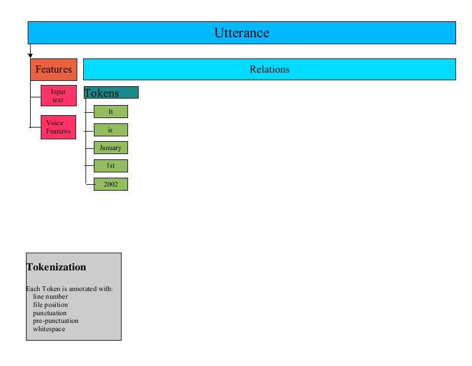
A Voice maintains a list of UtteranceProcessors. Each Utterance generated by the tokenization step is run through the UtteranceProcessors for the Voice. Each processor receives as input the Utterance that is being processed. The UtteranceProcessor may add new Relations to the Utterance, add new Items to Relations, or add new FeatureSets to Items or to the Utterance itself. Often times, a series of UtteranceProcessors are tightly coupled; one UtteranceProcessors may add a Relation to an Utterance that is used by the next.
CMUVoice sets up most of the UtteranceProcessors used by CMUDiphoneVoice. CMUVoice provides a number of getXXX methods that return an UtteranceProcessor, such as getUnitSelector and getUnitConcatenator. Sub-classes of CMUVoice override these getXXX methods to customize the processing. For instance, the CMUDiphoneVoice overrides getUnitSelector to return a DiphoneUnitsSelector.
The UtteranceProcessors described in this section are invoked when the CMUDiphoneVoice processes an Utterance. When processing begins the Utterance contains the token list and FeatureSets.
The TokenToWords UtteranceProcessor creates a word Relation from the token Relation by iterating through the token Relation Item list and creating one or more words for each token. For most tokens there is a one to one relationship between words and tokens, in which case a single word Item is generated for the token item. Other tokens, such as: "2001" generate multiple words "two thousand one". Each word is created as an Item and added to the word Relation. Additionally, each word Item is added as a daughter to the corresponding token in the token Relation.
The main role of TokenToWords is to look for various forms of numbers and convert them into the corresponding English words. TokenToWords looks for simple digit strings, comma separated numerals (such as 1,234,567), ordinal values, years, floating point values, and exponential notation. TokenToWords uses the JDK 1.4 regular expression API to perform some classification. In addition a CART (Classification and Regression Tree) is used to classify numbers as one of: year, ordinal, cardinal, digits. Refer to Classification and Regression Trees for more information on CARTS.
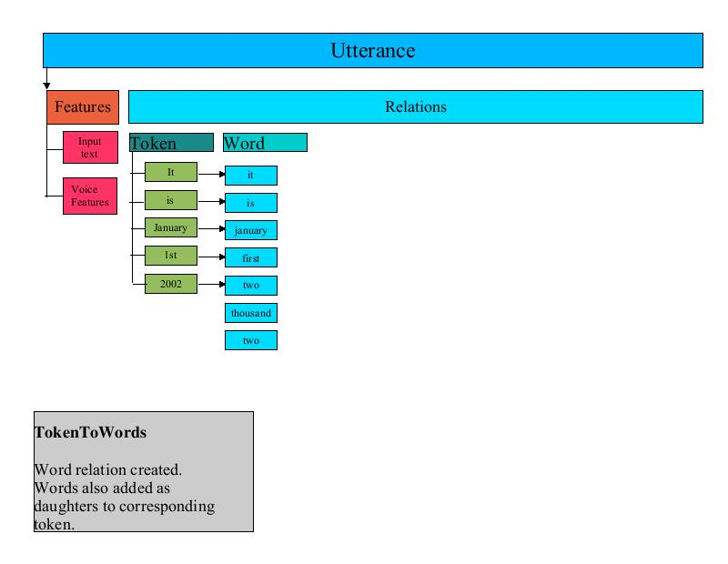
The PartOfSpeechTagger UtteranceProcessor is a place-holder processor that currently does nothing.
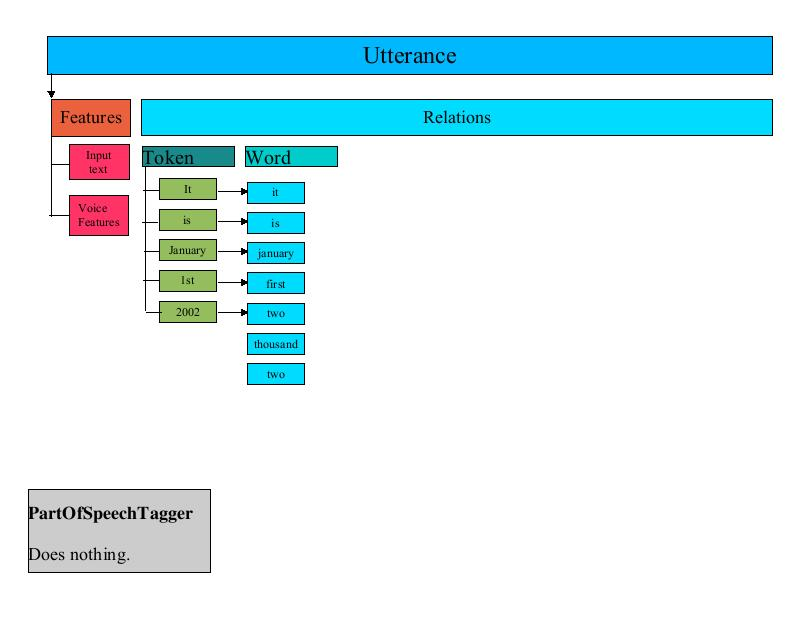
The Phraser processor creates a phrase Relation in the Utterance. The phrase Relation represents how the Utterance is to be broken into phrases when spoken. The phrase Relation consists of an Item marking the beginning of each phrase in the Utterance. This phrase Item has as its daughters the list of words that are part of the phrase.
The Phraser builds the phrase Relation by iterating through the Word Relation created by the TokenToWords processor. The Phraser uses a Phrasing CART to determine where the phrase breaks occur and creates the phrase Items accordingly.
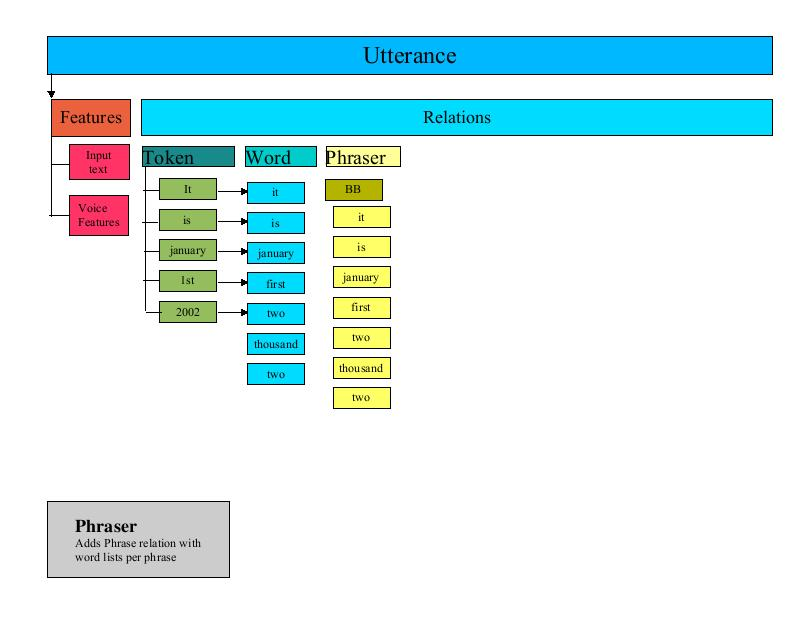
The Segmenter is one of the more complex UtteranceProcessors. It is responsible for determining where syllable breaks occur in the Utterance. It organizes this information in several new Relations in the Utterance.
The Segmenter iterates through each word in the Utterance. For each word, the Segmenter performs the following steps:
Retrieves the phones that are associated with the word from the Lexicon . Each word is organized in a Relation called "SylStructure".
Iterates through each phone of the word, adding the phone to a Relation called "Segment".
Determines where syllable breaks occur (with help from the lexicon) and notes the syllable break points in a Relation called "Syllable"
If the lexicon indicates that a particular phone is stressed, then the syllable that contains that phone is marked as "stressed".
When the Segmenter is finished, three new Relations have been added to the Utterance that denote the syllable structure and units for the Utterance.
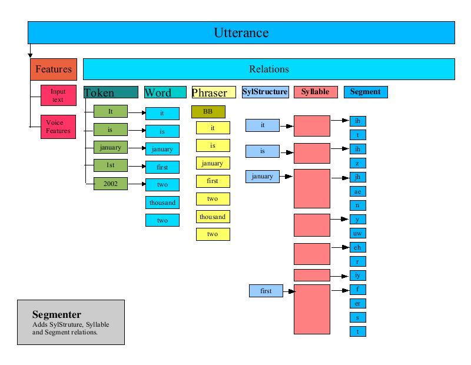
The PauseGenerator annotates an Utterance with pause information. It inserts a pause at the beginning of the segment list (thus all Utterances start with a pause). It then iterates through the phrase Relation (set up by the Phraser) and inserts a pause before the first segment of each phrase.
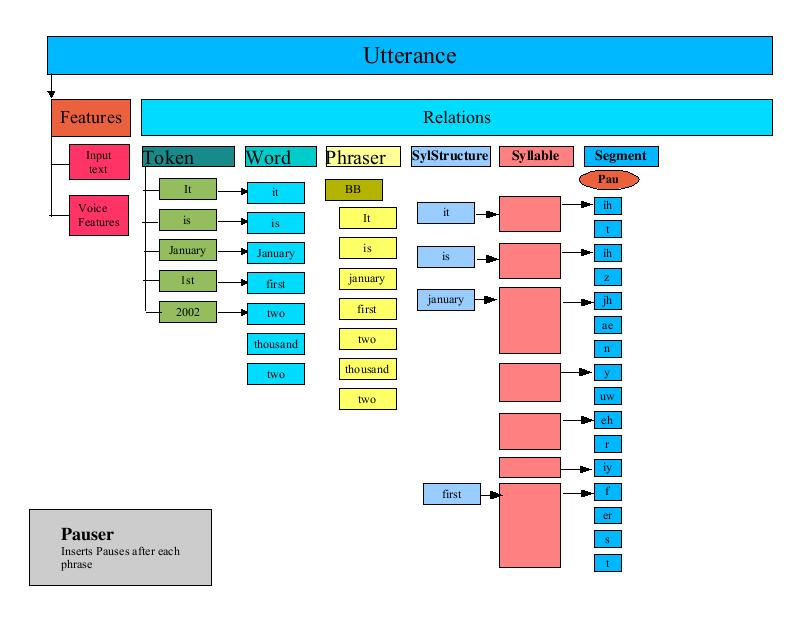
The Intonator processor annotates the syllable Relation of an Utterances with "accent" and "endtone" features. A typical application of this uses the ToBI (tones and break indices) scheme for transcribing intonation and accent in English, developed by Janet Pierrehumbert and Mary Beckman.
The intonation is independent of the ToBI annotation: ToBI annotations are not used by this class, but are merely copied from the CART result to the "accent" and "endtone" features of the syllable Relation.
This processor relies on two CARTs : an accent CART and a tone CART. This processor iterates through each syllable in the syllable relation, applies each CART to the syllable and sets the accent and endtone features of the Item based upon the results of the CART processing.
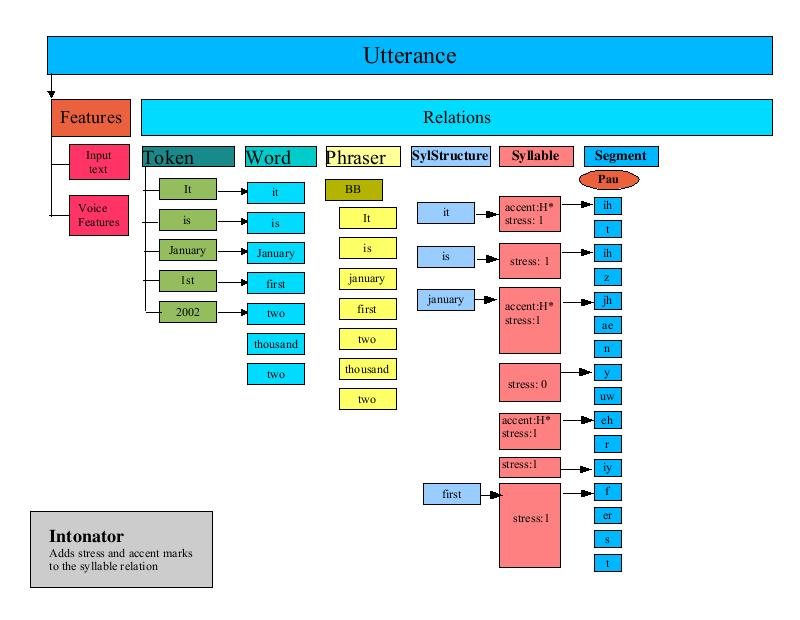
The PostLexicalAnalyzer is responsible for performing any fix ups before the next phase of processing. For instance, the CMUDiphoneVoice provides a PostLexicalAnalyzer that performs two functions:
Fix AH The diphone data for the CMUDiphoneVoice does not have any diphone data for the "ah" diphone. The CMU Lexicon that is used by the CMUDiphoneVoice, however, contains a number of words that reference the "ah" diphone. The CMUDiphoneVoice PostLexicalAnalyzer iterates through all phones in the segment Relation and replaces them with "aa" diphones.
Fix Apostrophe-S This step iterates through the segments and looks for words associated with the segments that contain an apostrophe-s. The processor then inserts a 'schwa' phoneme in certain cases.
The Durator is responsible for determining the ending time for each unit in the segment list. The Durator uses a CART to look up the statistical average duration and standard deviation for each phone and calculates an exact duration based upon the CART derived adjustment. Each unit is finally tagged with an "end" attribute that indicates the time, in seconds, at which the unit should be completed.
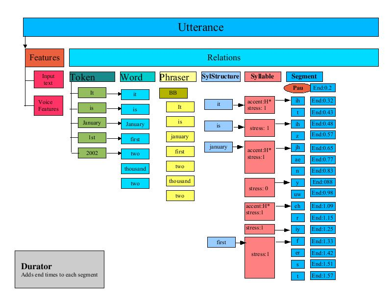
The ContourGenerator is responsible for calculating the F0 (Fundamental Frequency) curve for an Utterance. The paper: Generating F0 contours from ToBI labels using linear regression by Alan W. Black, Andrew J. Hunt, describes the techniques used.
The ContourGenerator creates the "target" Relation and populates it with target points that mark the time and target frequency for each segment. The ContourGenerator is driven by a a file of feature model terms. For example, CMUDiphoneVoice uses com/sun/speech/freetts/en/us/f0_lr_terms.txt. Here is an excerpt:
Intercept 160.584961 169.183380 169.570374 null p.p.accent 10.081770 4.923247 3.594771 H* p.p.accent 3.358613 0.955474 0.432519 !H* p.p.accent 4.144342 1.193597 0.235664 L+H* p.accent 32.081028 16.603350 11.214208 H* p.accent 18.090033 11.665814 9.619350 !H* p.accent 23.255280 13.063298 9.084690 L+H* accent 5.221081 34.517868 25.217588 H* accent 10.159194 22.349655 13.759851 !H* accent 3.645511 23.551548 17.635193 L+H* n.accent -5.691933 -1.914945 4.944848 H* n.accent 8.265606 5.249441 7.398383 !H* n.accent 0.861427 -1.929947 1.683011 L+H* n.n.accent -3.785701 -6.147251 -4.335797 H*
The first column represents the feature name. It is followed by the starting point, the mid-point and the ending point for the term (in terms of relative frequency deltas). The final column represents the ToBI label.
The ContourGenerator iterates through each syllable in the Utterance and applies the linear regression model as follows:
For each entry in the feature/model/terms table, extract the named feature.
Compare the feature value to the ToBI label as specified in the table.
If the features match, then use the start/midpoint and end to update the curve.
Add the new target point to the target Relation
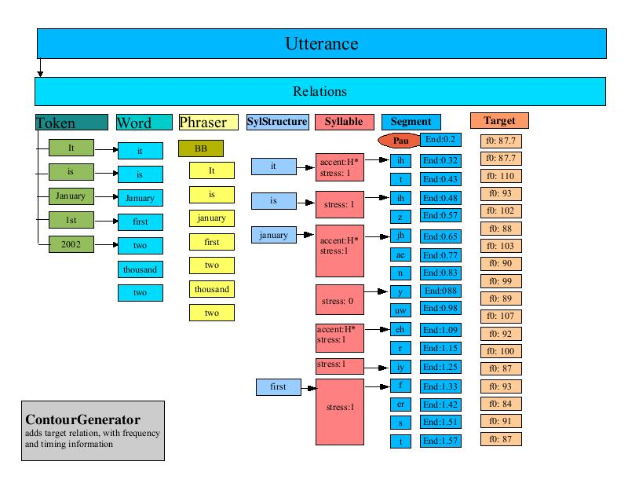
The UnitSelector that is used by the CMUDiphoneVoice creates a Relation in the Utterance called "unit". This relation contains Items that represent the diphones for the unit. This processor iterates through the segment list and builds up diphone names by assembling two adjacent phone names. The diphone is added to the unit Relation along with timing information about the diphone.
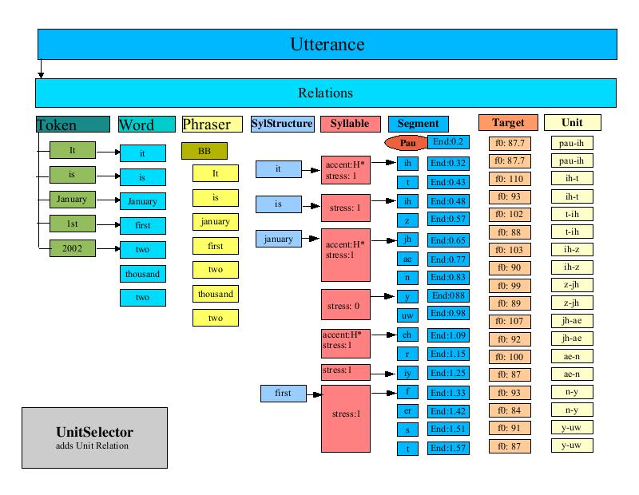
The PitchMarkGenerator is responsible for calculating pitchmarks for the Utterance. The pitchmarks are generated by iterating through the target Relation and calculating a slope based upon the desired time and F0 values for each Item in the target Relation. The resulting slope is used to calculate a series of target times for each pitchmark. These target times are stored in an LPCResult object that is added to the Utterance.
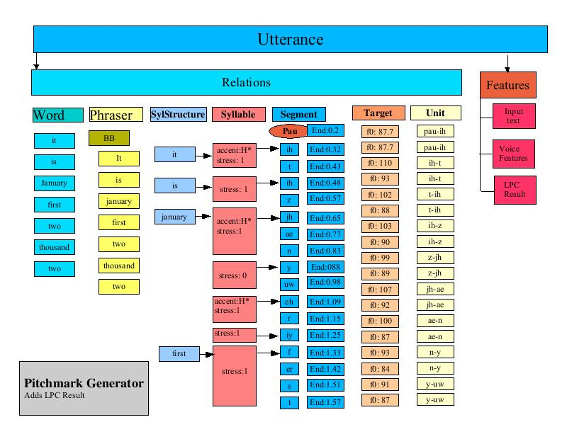
The UnitConcatenator processor is responsible for gathering all of the diphone data and joining it together. For each Item in the unit Relation (recall this was the set of diphones) the UnitConcatenator extracts the unit sample data from the unit based upon the target times as stored in the LPC result.
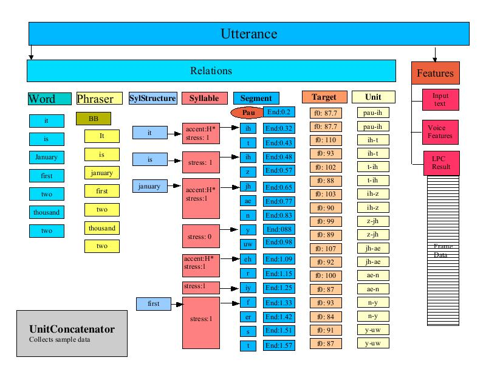
FreeTTS Data |
FreeTTS uses a number of interesting data structures. These are described here.
The use of Classification and Regression Trees is described in the paper by L. Breiman, J. H. Friedman, R. A. Olshen, and C. J. Stone. Classification and Regression Trees. Additional information about how such trees can be used in the context of speech synthesis is described in Chapter 10 of the System Documentation of the Edinburgh Speech Tools Library. The Classification and Regression Trees (CART) in FreeTTS are essentially binary decision trees used to classify some part of an Utterance.
A CART is a tree of nodes and leaves. Each node consists of the following:
Feature The feature to test. This is in the form of a feature traversal string. For instance the feature string:
"R:SylStructure.daughter.R:Segment.p.end"
Can be interpreted as:
Given an Item in
the syllable relation (syl), find the SylStructure Relation in that
syllable, get the first daughter, find the segment associated with
the daughter, find the previous segment and return its "end
time".
Operand The type of test to perform. The available operands are:
LESS_THAN - The feature is less than the value
EQUAL - The feature is equal to the value
GREATER_THAN - The feature is greater than the value
MATCHES - The feature matches the regular expression stored in the value
Value The feature value is compared based on the operand to this value.
Success Node If the comparison is successful, tree traversal continues at this node.
Failure Node If the comparison fails, traversal continues at this node.
Type A node can be of two types, a NODE or a LEAF. A NODE is a non-terminal member of the tree, whereas a LEAF is a terminal node. Once the interpretation of a CART reaches a LEAF node, the value for that node is returned.
Typically, an UtteranceProcessor will employ a CART tree to classify a particular Item or part of an Utterance. The CART processing proceeds as follow:
Starting at the first node in the CART, extract the feature pointed to by the node.
Compare based upon the NODE operand to the node value. If the comparison succeeds proceed to the Success Node, otherwise go to the Failure Node.
Continue processing nodes in this fashion until a LEAF node is reached, at which point return the value of that node.
|
CARTS used by FreeTTS |
|||
|---|---|---|---|
|
Name |
Location |
# Nodes |
Description |
|
Phraser |
en/us/durz_cart.txt |
40 nodes |
used to determine where to place breaks in phrases. |
|
Accent |
en/us/int_accent_cart.txt |
150 nodes |
used to determine where to apply syllable accents . |
|
Tone |
en/us/int_tone_cart.txt |
100 nodes |
used to determine the type of 'end tone' for syllables. |
|
Duration |
durz_cart.txt |
800 nodes |
used to determine the duration for each segment of an Utterance. |
|
TokenToWords |
en/us/nums_cart.txt |
100 nodes |
used to classify numbers as cardinal, digits, ordinal or year. |
|
ClusterUnitSelection |
en/us/cmu_awb/cmu_time_awb.txt |
130 CARTS, 2 nodes each |
The cluster unit database contains 132 separate CART trees, each of which contains just a couple or so nodes. These CARTS are used to select phoneme units. |
The Lexicon provides a mapping of words to their pronunciations. FreeTTS provides a generic lexicon interface (com.sun.speech.freetts.lexicon) and a specific implementation, com.sun.speech.freetts.en.us.CMULexicon that provides a English language lexicon based upon CMU data. The essential function of a Lexicon is to determine the pronunciation of a word. The retrieval is done via the interface: Lexicon.getPhones. word.
The Lexicon interface provides the ability to add new words to the Lexicon.
The CMULexicon is an implementation of the Lexicon interface that supports the Flite CMU Lexicon. The CMULexicon contains over 60,000 pronunciations. Here is a snippet:
abbasi0 aa b aa1 s iy abbate0 aa1 b ey t abbatiello0 aa b aa t iy eh1 l ow abbe0 ae1 b iy abbett0 ax b eh1 t abbie0 ae1 b iy abbitt0 ae1 b ax t abbot0 ae1 b ax t abboud0 ax b uw d abbreviate0 ax b r iy1 v iy ey1 t abbruzzese0 aa b r uw t s ey1 z iy abbs0 ae1 b z abby0 ae1 b iy abco0 ae1 b k ow abdel0 ae1 b d eh1 l abdicating0 ae1 b d ih k ey1 t ih ng
Each entry contains a word, with a part-of-speech tag appended to it, followed by the phones representing the pronunciation. A separate file maintains the addenda. The addenda is a smaller set of pronunciations typically used to provide custom or application or domain specific pronunciations.
The CMULexicon implementation also relies on a set of Letter-To-Sound rules. These rules can automatically determine the pronunciation of a word. When the pronunciation of a word is requested, the CMULexicon will first look it up in the main list of words. If it is not found, the addenda is checked. If the word is still not found, then the Letter-To-Sound rules are used to convert the words into phones. To conserve space, the CMULexicon has been stripped of all words that can be recreated using the Letter-To-Sound rules. One can look at the 60,000 pronunciations in the Lexicon as exceptions to the rule.
The Lexicon data is represented in two forms: text and binary. The binary form loads much quicker than the text form of the data and is the form that is generally used by FreeTTS. FreeTTS provides a method of generating the binary form of the Lexicon from the text form of the Lexicon.
The Letter-To-Sound (LTS) rules are used to generate a phone sequence for words not in the Lexicon. The LTS rules are a simple state machine, with one entry point for each letter of the alphabet.
The state machine consists of a large list of entries. There are two types of entries: a STATE and a PHONE. A STATE entry contains a decision and the indices of two other entries. The first of these two indices represents where to go if the decision is true, and the second represents where to go if the decision is false. A PHONE entry is the final state of the decision tree and contains the phone that should be returned.
The decision in FreeTTS's case is a simple character comparison, but it is done in the context of a window around the character in the word. The decision consists of a index into the context window and a character value. If the character in the context window matches the character value, then the decision is true. The machine traversal for each letter starts at that letter's entry in the state machine and ends only when it reaches a final state. If there is no phone that can be mapped, the phone in the final state is set to 'epsilon.' The context window for a character is generated in the following way:
Pad the original word on either side with '#' and '0' characters to the size of the window for the LTS rules (in FreeTTS's case, this is 4). The "#" is used to indicate the beginning and end of the word. So, the word "monkey" would turn into "000#monkey#000".
For each character in the word, the context window consists of the characters in the padded form that precede and follow the word. The number of characters on each side is dependent upon the window size. So, for FreeTTS, the context window for the 'k' in monkey is "#money#0".
Here's how the phone for 'k' in 'monkey' might be determined:
Create the context window "#monkey#0".
Start at the state machine entry for 'k' in the state machine.
Grab the 'index' from the current state. This represents an index into the context window. Compare the value of the character at the index in the context window to the character from the current state. If there is a match, the next state is the true value. If there is not a match, the next state is the false state.
Repeat the previous step until you read a final state.
When you get to the final state, the phone is the character in that state.
The designers of FreeTTS have written it in such a way that the unit selection can be done using several methods. The current methods are diphone and cluster unit selection.
Luckily, the unit selection is independent of the wave synthesis. As a result, if the units from either unit selection type share the same format, the same wave synthesis technique can be used. This is the case for the KAL diphone and AWB cluster unit voices.
The diphone unit selection is very simple: it combines each adjacent phoneme into a pair separated by a "-". These pairs are used to look up entries in the diphone database.
The cluster unit selection is a bit more complex. Instead of working with diphones, it works on one unit at a time, and there can be more than one instance of a unit per database.
The first step in cluster unit selection determines the unit type for each unit in the Utterance. The unit type for selection in the simple talking clock example (cmu_time_awb) is done per phone. The unit type consists of the phone name followed by the word the phone comes from (e.g., n_now for the phone 'n' in the word 'now').
The unit database contains a plurality of instances per unit type, and they are indexed by number (e.g., n_now_0, n_now_1, etc.). Also included in this database are what unit instances come before and after each unit (e.g., n_now_13 is preceded by z_is_13 and is followed by unit_aw_now_13).
Once the unit types have been determined, the next step is to select the best unit instance. This is done using a Viterbi algorithm where the cost is based upon the Mel-Cepstra distance between candidates. The candidate selection is determined using two things:
A CART - given an item, the CART will return a list of the unit type instances that are potential choices. Most of the CARTs in cmu_time_awb are very simple - there are no choices and the first node is a leaf node containing the list.
Extended selections. For the unit preceding the current unit, the candidate selection will search the units following that unit. If the unit type is the same as the current unit, then that unit is added as a candidate.
After the candidates are chosen, the Viterbi algorithm is used to calculate path costs. The basic algorithm is as follows:
For each candidate for the current unit, calculate the cost between it and the first candidate in the next unit. Save only the path that has the least cost. By default, if two candidates come from units that are adjacent in the database, the cost is 0 (i.e., they were spoken together, so they are a perfect match).
Repeat the previous process for each candidate in the next unit, creating a list of least cost paths between the candidates between the current unit and the unit following it.
Toss out all candidates in the current unit that are not included in a path.
Move to the next unit and repeat the process.
Once the whole tree is done, the path(s) with the least cost should be identified, and these represent the RELP encoded samples to choose from the database.
CMUDiphoneVoice Code Walkthrough |
In this section, we will look at the CMUDiphoneVoice class to see how a new voice is created and customized.
/** * Defines an unlimited-domain diphone synthesis based voice */
The CMUDiphoneVoice class extends the CMUVoice. CMUVoice provides much of the standard voice definition including loading of the Lexicon, setting up of common features, setting up of UtteranceProcessors.
public class CMUDiphoneVoice extends CMUVoice {
/**
* Creates a simple voice
*/
It is possible and quite likely that multiple voices will want to share a single Lexicon. By passing false to the CMUVoice constructor, this voice indicates that by default no Lexicon should be created. This allows a Voice manager (such as the FreeTTSSynthesizer to create a single Lexicon and have multiple voices share it.
public CMUDiphoneVoice() {
this(false);
}
/**
* Creates a simple voice
*
* @param createLexicon if true automatically load up
* the default CMU lexicon; otherwise, don't load it.
*/This version of the constructor sets the standard rate, pitch and range values for the voice.
public CMUDiphoneVoice(boolean createLexicon) {
super(createLexicon);
setRate(150f);
setPitch(100F);
setPitchRange(11F);
}
/**
* Sets the FeatureSet for this Voice.
*
* @throws IOException if an I/O error occurs
*/If this voice needed to add or customize the feature set, it would do so here. This voice is happy with the default features provided by CMUVoice, so nothing is done here.
protected void setupFeatureSet() throws IOException {
super.setupFeatureSet();
}
/**
* Returns the post lexical processor to be used by this voice.
* Derived voices typically override this to customize behaviors.
*
* @return the Unit selector
*
* @throws IOException if an IO error occurs while getting
* processor
*/Here is an example of how to override the default Utterance processing provided by CMUVoice. CMUDiphoneVoice needs to provide a post-lexical analyzer that converts one phone "ah" to another "aa". CMUVoice provides a number of 'getXXXX' functions that return the UtteranceProcessor that will be used for that stage of processing. CMUDiphoneVoice overrides the getPostLexicalAnalyzer method to provide the customized post lexical analyzer.
protected UtteranceProcessor getPostLexicalAnalyzer() throws IOException {
return new CMUDiphoneVoicePostLexicalAnalyzer();
}
/**
* Returns the pitch mark generator to be used by this voice.
* Derived voices typically override this to customize behaviors.
* This voice uses a DiphonePitchMark generator to generate
* pitchmarks.
*
* @return the post lexical processor
*
* @throws IOException if an IO error occurs while getting
* processor
*/
The diphone voice needs to provide a customized pitchmark generator that is specific to diphone synthesis.
protected UtteranceProcessor getPitchmarkGenerator() throws IOException {
return new DiphonePitchmarkGenerator();
}
/**
* Returns the unit concatenator to be used by this voice.
* Derived voices typically override this to customize behaviors.
* This voice uses a relp.UnitConcatenator to concatenate units.
*
* @return the post lexical processor
*
* @throws IOException if an IO error occurs while getting
* processor
*/
This voice uses the standard UnitConcatenator.
protected UtteranceProcessor getUnitConcatenator() throws IOException {
return new UnitConcatenator();
}
/**
* Returns the unit selector to be used by this voice.
* Derived voices typically override this to customize behaviors.
* This voice uses the DiphoneUnitSelector to select units. The
* unit selector requires the name of a diphone database. If no
* diphone database has been specified (by setting the
* DATABASE_NAME feature of this voice) then by default
* cmu_kal/diphone_units.bin is used.
*
* @return the post lexical processor
*
* @throws IOException if an IO error occurs while getting
* processor
*/The unit selector is also diphone specific. Note that this method also specifies which diphone unit database to use if none has been supplied already.
protected UtteranceProcessor getUnitSelector() throws IOException {
String unitDatabaseName = getFeatures().getString(DATABASE_NAME);
if (unitDatabaseName == null) {
unitDatabaseName = "cmu_kal/diphone_units.bin";
}
return new DiphoneUnitSelector(
this.getClass().getResource(unitDatabaseName));
}
/**
* Converts this object to a string
*
* @return a string representation of this object
*/
public String toString() {
return "CMUDiphoneVoice";
}
}
/**
* Annotates the Utterance with post lexical information. Converts AH
* phonemes to AA phoneme in addition to the standard english postlex
* processing.
*/
Here is an example of defining a new UtteranceProcessor. This UtteranceProcessor traverses through the SEGMENT Relation looking for all phones of type "ah" and converts them to "aa" phones. Since this Processor is used to replace the default post-lexical analyzer processor, it invokes the default post-lexical analyzer after performing the custom processing.
class CMUDiphoneVoicePostLexicalAnalyzer implements UtteranceProcessor {
UtteranceProcessor englishPostLex =
new com.sun.speech.freetts.en.PostLexicalAnalyzer();
/**
* performs the processing
* @param utterance the utterance to process/tokenize
* @throws ProcessException if an IOException is thrown during the
* processing of the utterance
*/
public void processUtterance(Utterance utterance) throws ProcessException {
fixPhoneme_AH(utterance);
englishPostLex.processUtterance(utterance);
}
/**
* Turns all AH phonemes into AA phonemes.
* This should really be done in the index itself
* @param utterance the utterance to fix
*/
private void fixPhoneme_AH(Utterance utterance) {
for (Item item = utterance.getRelation(Relation.SEGMENT).getHead();
item != null;
item = item.getNext()) {
if (item.getFeatures().getString("name").equals("ah")) {
item.getFeatures().setString("name", "aa");
}
}
}
// inherited from Object
public String toString() {
return "PostLexicalAnalyzer";
}
}
Voice Packaging |
FreeTTS has been designed to allow flexible and dynamic addition of voices.
Voices are defined by their corresponding VoiceDirectories. These directories are what actually create the instances of the voices, and can create several different voices. This is useful if a single voice can sound dramatically different if it is created through different parameters. Then the directory can return more than one instance of the same voice class though they may sound different. It may also be useful for the same voice package to contain more than one voice, allowing a single interface to those voices. The voice directory MUST also provide a main() function that will print out information about the voice if invoked. Typically this is done by simply calling the VoiceDirectory's toString() method.
A voice package is a jar file that contains exactly one subclass of VoiceDirectory. The package probably contains data files as well as other java classes that implement the voices provided. The jarfile Manifest must also include three entries:
"Main-Class" which will be the VoiceDirectory class, and prints out information about the voices provided
"FreeTTSVoiceDefinition: true", which informs FreeTTS that this jarfile is a voice package
"Class-Path:" which lists all the jars upon which this voice package is dependent. For example, the voice may be dependent upon its lexicon jarfile. This allows a user to simply execute the main() function without having to specify all of the dependencies (which the user may not know).
Voice Packages can be added to FreeTTS without any compilation. There are two ways to alert FreeTTS to the presence of a new voice:
Listing of the VoiceDirectory classes that are loaded.
Putting the packages in the correct directory and allowing FreeTTS to automatically detect them. [[[TODO: This is not yet implemented. For now use the listing method.]]]
Listing of the VoiceDirectory classes requires all of the required classes to be appropriately in the java classpath. The names of the voice directory classes are listed in voices files. When VoiceManager.getVoices() is called, reads several files.
First, it looks for internal_voices.txt, stored in the same directory as VoiceManager.class (If the VoiceManager is in a jarfile, which it probably is, then this file is also inside the jar file). If the file does not exist, FreeTTS moves on. internal_voices.txt only exists to allow one to package FreeTTS into a single stand-alone jarfile, as may be needed for applets. Avoid using internal_voices.txt if at all possible. The file then requires you to ship all listed voices along with FreeTTS and provides minimal flexibility.
Next, FreeTTS looks for voices.txt in the same directory as freetts.jar (assuming FreeTTS is being executed from a jar, which it probably is). If the file does not exist, FreeTTS moves on.
Last, if the system property "freetts.voicesfile" is defined, then FreeTTS will use the voice directory classes listed in that file.
Voice packages can also be recognized simply by putting them in the correct filesystem directory. [[[TODO: At least, that is the plan. This is not yet actually implemented.]]] If a jarfile is in the correct directory and has the "FreeTTSVoiceDefinition: true" definition in its Manifest, then it is assumed to be a voice package. The file is then loaded along with all dependencies listed in the "Class-Path:" definition. Whatever class is listed as the "Main-Class:" is assumed to be the voice directory. There are two ways to specify which filesystem directory to look in:
By default, FreeTTS will look in the same directory as freetts.jar. (Assuming FreeTTS was loaded from a jarfile, which it probably was).
The directories specified by the system property "freetts.voicespath".
To create a voice package you simply need to meet the qualifications above. However that can be a bit of work. If you want to import a voice from FestVox, there are tools in tools/FestVoxToFreeTTS/. View the README file there for more information. The scripts can automatically import a US/English voice, but is not designed to handle others. For the simple case of US/English voices, simply put them in a subdirectory of com/sun/speech/freetts/en/us/. Files ending with ".txt" will be assumed to be data files for the voice and compiled into their ".bin" and ".idx" equivalents. The file "voice.Manifest" will automatically be added to the Manifest of the voice package's jarfile. The compilation system will automatically detect new directories inside en/us, assume they are voice packages, and create new jarfiles for them.
See the license
terms and acknowledgments.
Copyright
2003 Sun Microsystems, Inc. All Rights Reserved. Use is subject to
license terms.